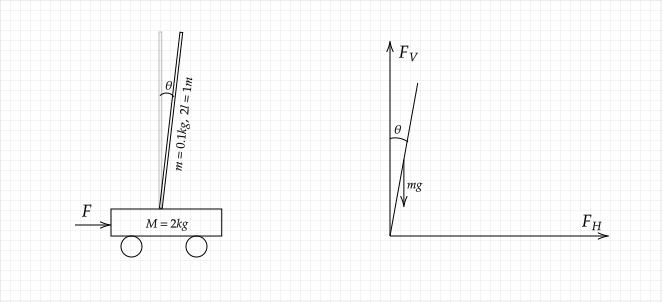

摘抄自倒立摆状态反馈控制——分析、建模与仿真(matlab)，物理模型如下：

建立状态空间方程
假设外力为F，小车质量为M、向右的位移为s，摆杆质量为m、长度为2l。要求使摆杆保持垂直，即θ=0。则可以对白干进行受力分析：
- 摆杆（质心）的加速度与受力的关系（向右、向上为正）：
mdt2d2(s+lsinθ)=FH(1)
dt2d2(lcosθ)=FV−mg(2)
- 摆杆转动惯量与受力的分析（顺时针为正）：
Tθ¨=FVlsinθ−FHlcosθ(3)
- 假设d 为地面与小车的阻尼系数，则小车的受力情况分析：
Ms¨=F−FV−ds˙(4)
- 摆杆的转动惯量T=34ml2，联立以上4 个方程，然后忽略阻尼系数d=0，因为θ→0， 则sinθ=θ,cosθ=1。可以得到以下方程：
34ml2θ¨=mglθ−ml2θ¨−mls¨(5)
Ms¨=F−ms¨−mlθ¨−ks˙(6)
可以化简为：
37lθ¨+s¨=gθ(7)
(M+m)s¨+mlθ¨=F(8)
定义系统状态x1=θ,x2=θ˙,x3=s,x4=s˙，得到系统的状态方程：
x1˙x2˙x3˙x4˙y=====x2(4M+m)l3(M+m)gx1−(4M+m)l3Fx4−4M+m3mgx1+4M+m4Fx1
代入数据，后得到：X˙=AX+BU,Y=CX+DU，其中y1=θ,y2=θ˙：
A=⎣⎢⎢⎢⎡015.2440−0.363100000000010⎦⎥⎥⎥⎤,B=⎣⎢⎢⎢⎡0−0.74100.494⎦⎥⎥⎥⎤,C=[10010000],D=[00]
控制器设计
首先判断系统的能控性 CONT=ctrb(A,B)；rank(CONT)，结果为4，证明系统是可控的。**系统的特征多项式为：α(s)=det(sI−A)=s4−20.601s2**发现特征值存在大于0 的情况，系统是不稳定的。
配置极点
这是一个四阶系统，我们可以配置两个靠近虚轴的闭环主导极点，另外两个远离虚轴得得极点，既可以将系统近似简化成一个二阶系统。根据二阶系统的调节时间、超调量等参数确定闭环主导极点：
λ1∗=−2+j23,λ2∗=−2−j23(ts≈2s,ζ=0.5)
然后再选两个远离虚轴的极点：λ3∗=λ4∗=−10，可以计算状态反馈增益矩阵：K=[−545.54−110.16−380.39−116.88]
或者也可以根据LQR控制理论的应用之一阶倒立摆 确定状态反馈增益矩阵。
（降维）观测器的设计
假设我们只能测量到摆杆的角度、小车的位移两个状态，我们可以重新排序状态空间方程：
x1=θ,x2=s,x3=θ˙,x4=s˙(9)
状态矩阵变为：
A=⎣⎢⎢⎢⎡0015.244−0.363100000000100⎦⎥⎥⎥⎤,B=⎣⎢⎢⎢⎡00−0.7410.494⎦⎥⎥⎥⎤,C=[10010000],D=[00]
- 首先判断系统是能观的
- 设原系统的输出矩阵为C=[C1⋮C2]，其中C1非奇异（满秩）：
2.1 构造状态变换矩阵P=[C1−10−C1−1C2In−m]
2.2 将原系统的状态矩阵变为
Aˉ=P−1AP=[A11ˉA21ˉA12ˉA22ˉ]
Bˉ=P−1B=[B1ˉB2ˉ]
Cˉ=CP=[I0]
- 设计反馈增益矩阵H^，使得A22^−H^A12^ 的特征值在复平面的左半边指定位置上，一般观测器的极点为系统主导极点的三到五倍，可以确定Hˉ=[H11H21H12H22]
- 子系统X2 的观测器如下，而Y=[x1x2]：
{Z˙=(A22ˉ−HˉA12ˉ)X2^+(B2ˉ−HˉB1ˉ)U+(A21ˉ−HˉA11ˉ)YX2^=Z+HˉY
- 原系统的观测量为：
X^=P[x1x2^]
虽然目前还没完全掌握降维观测器的知识，但是下面的连接却让我看到了有人实现了我想做的事情。念念不忘，必有回响吧！现在想想，应该好好地学习如何写代码了！
参看资料